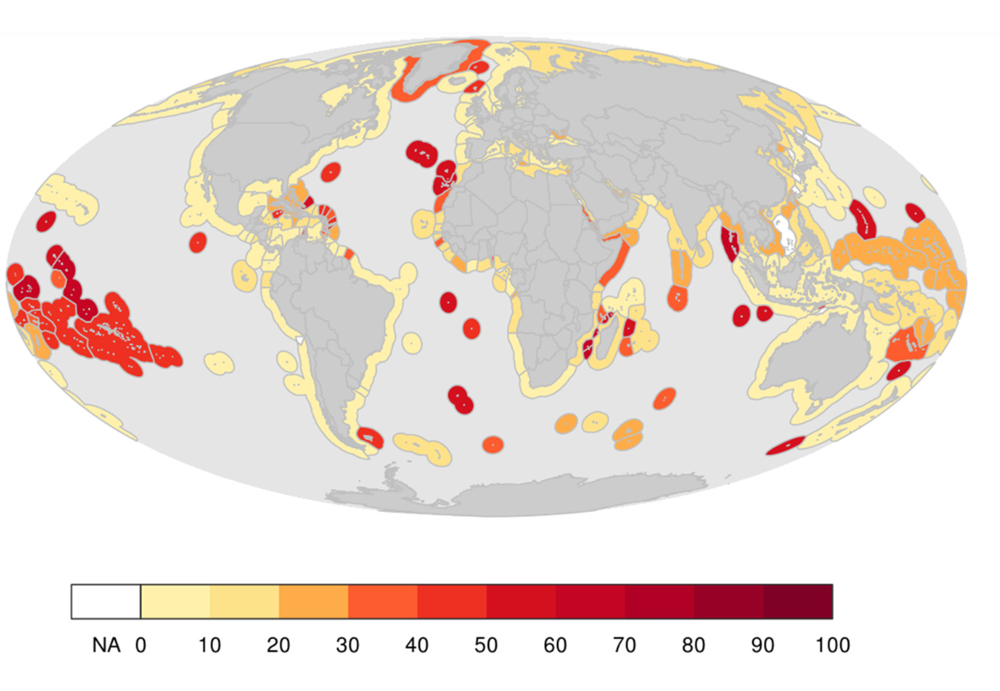
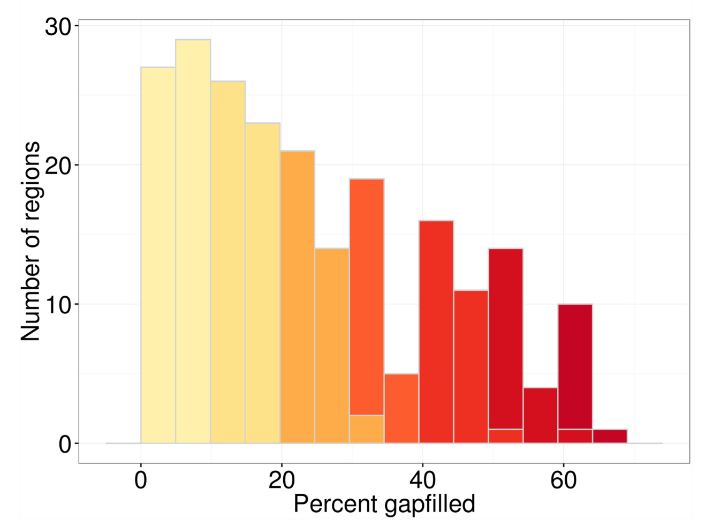

Chapter 4 Explore Global Data
4.1 Objectives and Resources
What data are included to calculate scores for global assessments? There are actually many levels to answering this. There are over 100 data sources that are used to calculate global assessments, and these are the data we most easily report. However, the data available for each of the 220 countries and territories varies within these data sources. Here we will begin to explore those data.
Objectives
- explore data sources for global assessments
- explore data for a specific country
- discuss gapfilling data
Resources
- http://ohi-science.org/ohi-global/layers_table.html
- (Mapping Uncertainty Due to Missing Data)[http://journals.plos.org/plosone/article?id=10.1371%2Fjournal.pone.0160377)
4.2 Goal Models and Data Sources
More information on each goal in the global assessment: ohi-science.org/ohi-global/goals
- status/trend
- pressures/resilience
4.3 Data for a specific country
When data layers have sub-categories of information within them, such as habitat type, only the the sub-categories that are relevant to a specific region will be included. For example, both Samoa and Canada have data layers about habitat, but Samoa has…
- Habitats
- Fisheries
- Iconic Species
4.4 Gapfilling Data: Global Assessments
4.4.1 Methods
- For priority setting.
- Intro of gapfilling
- Mel’s paper (not LE)
- Mel’s presentation
4.4.2 Results
The results for 220 countries in 2015. From Frazier et al:
Regions varied greatly in the contribution of gapfilled data to their overall index scores. Regions with larger amounts of gapfilled data tended to be smaller and/or territorial jurisdictions of countries, highlighting the fact that most territories and smaller countries (often with smaller economies and other resources) tend to be monitored and assessed less frequently.
 Figure 2a
For the regions, the contribution of gapfilled data to their index scores ranged from 0 to 64%. For many regions, index scores were calculated using relatively little gapfilled data: 27 regions (of 220) had 5% gapfilled data, and 56 regions had 10%. … In general, the contribution of gapfilled data to index scores was fairly high for Islands in the South Pacific.
 Figure 2b
- carpet plots